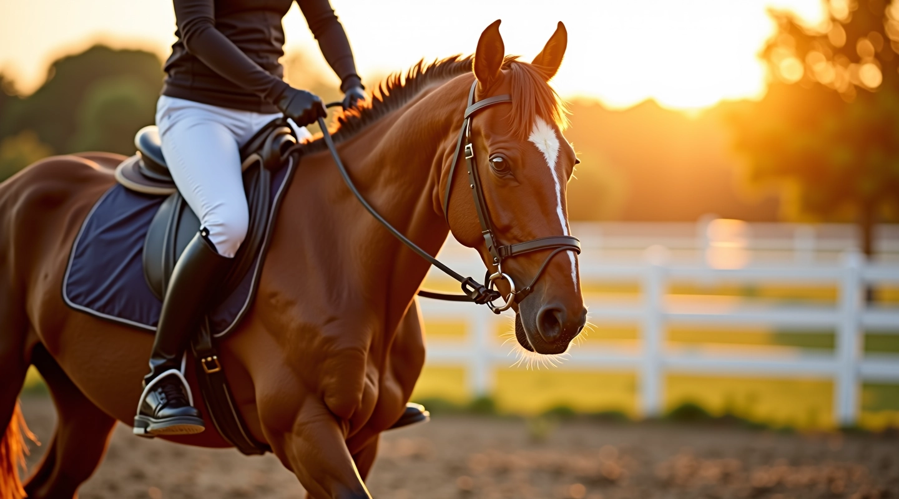
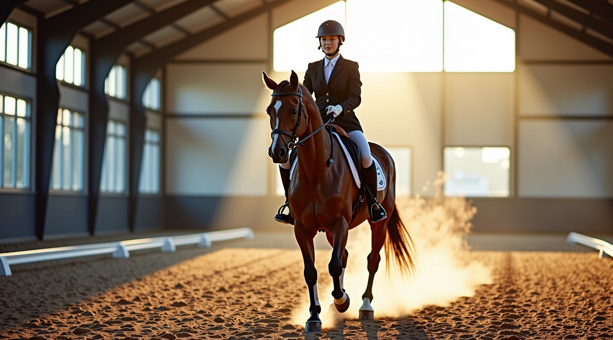
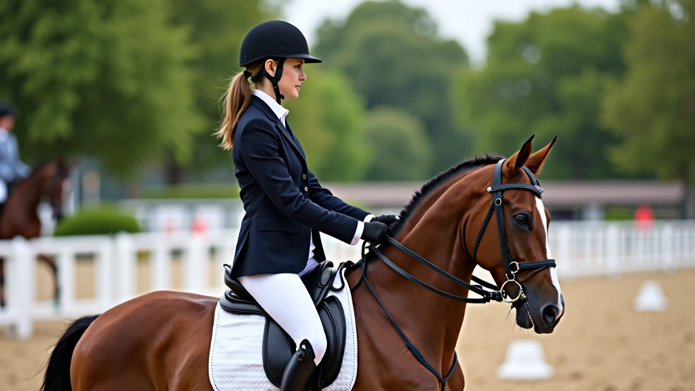

أساسيات الجلسة الصحيحة والتوازن على الحصان
شرح مفصل لكيفية جلوس الفارس بشكل صحيح، موضع الساقين والحوض، والحفاظ على التوازن أثناء جميع حركات الحصان.
اقرأ المقالة الكاملة
دليل عملي شامل لتحسين مهارات الفارس والحصان من خلال التمارين الأساسية والمتقدمة
اكتشف العناصر الأساسية التي تشكل أساس كل تمرين ناجح
وضعية جسم صحيحة مع توزيع وزن متساوٍ على كلا الجانبين. يؤثر هذا بشكل مباشر على استقرار الفارس واستجابة الحصان.
الحفاظ على اتصال ثابت مع فم الحصان من خلال الأرسان. التواصل الواضح بين الفارس والحصان أساسي لأي حركة.
الحفاظ على نمط متسق وسرعة منتظمة في جميع الحركات. التقدم التدريجي يحسن من جودة الأداء والثقة.
برنامج منظم لتحسين مستمر وآمن
نبدأ بتعليم الخطوات الأولى وأساليب التحكم الأساسية. كل فارس يحتاج إلى أساس قوي قبل الانتقال للتمارين المتقدمة. هذه المرحلة تستغرق عادة بضعة أسابيع حسب الخبرة السابقة.

بعد إتقان الأساسيات، ننتقل إلى تمارين أكثر تعقيداً. هذا يشمل تحسين الخطوات العالية والحركات الجانبية. التركيز على الجودة وليس السرعة يضمن نتائج أفضل وتطوراً مستدام.
المستوى المتقدم يتطلب سيطرة كاملة وثقة عالية. تمارين الأشكال الهندسية والحركات المعقدة تطور مرونة الحصان والتحكم الدقيق. هذه المرحلة تفتح آفاقاً جديدة للأداء.
رحلة نشر المعرفة حول تمارين العمل المسطح
انطلاقة الموقع بأول المقالات حول أساسيات الجلسة والتوازن
إضافة تمارين تطوير الخطوة وشرح تفصيلي للحركات الانتقالية
توسيع المحتوى ليشمل الأشكال الهندسية والتمارين الجانبية
إطلاق قسم التمارين المتقدمة والحركات المعقدة
تحديثات دورية لضمان محتوى عملي وملائم لجميع المستويات
استكشف المقالات المفصلة والنصائح العملية التي ستساعدك على التقدم بسرعة وأمان
اقرأ الأدلة الكاملةمنصة تعليمية متخصصة في تمارين العمل المسطح بالفروسية، توفر محتوى عملي وسهل الفهم للفرسان من جميع المستويات. نركز على الشرح الواضح والأمثلة الفعلية لكل تمرين.
رحلة تعلم منظمة وسهلة
ابدأ بتحديد مستواك الحالي سواء كنت مبتدئاً أو لديك خبرة سابقة
ابدأ بفهم أساسيات الجلسة والتوازن قبل الانتقال لأي شيء آخر
مارس التمارين بشكل منتظم وركز على الجودة وليس السرعة
انتقل للتمارين الأكثر تعقيداً عندما تشعر بالثقة والاستعداد
تحسينات ملموسة وحقيقية
تحسن الاتصال بين الفارس والحصان من خلال التفاهم المتبادل والاستجابة السريعة
تقوية عضلات الحصان وتحسن المرونة والحركة الطبيعية والصحيحة
زيادة ثقة الفارس وتطوير مهارات التحكم والسيطرة على الحصان
إعداد صحيح لأي تخصص فروسية سواء عرض أو منافسة أو ركوب حر
إجابات على استفساراتك الأساسية
بالتأكيد. نبدأ بالأساسيات التي تناسب المبتدئين تماماً. ما يهم هو الممارسة المنتظمة والصبر على التطور التدريجي.
يختلف هذا من فارس لآخر. في المتوسط، تستغرق المبادئ الأساسية من 6 إلى 8 أسابيع مع الممارسة المنتظمة ثلاث مرات أسبوعياً على الأقل.
نعم، العمر والخبرة السابقة للحصان مهمة جداً. ننصح دائماً باستشارة مدرب ذي خبرة يمكنه تقييم حالة الحصان بشكل شخصي.
البدايات قد تكون صعبة، لكن مع الممارسة ستشعر بالفرق. الحصان سيستجيب بشكل أفضل عندما تكون الحركات صحيحة. لا تتردد في طلب مساعدة من مدرب محترف.
أهم الأدلة لتطوير مهاراتك

شرح مفصل لكيفية جلوس الفارس بشكل صحيح، موضع الساقين والحوض، والحفاظ على التوازن أثناء جميع حركات الحصان.
اقرأ المقالة الكاملة
تمارين عملية لتحسين جودة خطوات الحصان، زيادة الارتفاع والقوة، والوصول إلى حركات متقدمة مثل الخطو العالي.
اقرأ المقالة الكاملة
استخدام الدوائر والمربعات والخطوط لتطوير مرونة الحصان الجانبية، التحكم الدقيق، وتحسين التعاون بين الفارس والحصان.
اقرأ المقالة الكاملةنستخدم ملفات تعريف الارتباط لتحسين تجربتك على الموقع. بمتابعتك للتصفح، أنت توافق على استخدامنا للملفات.